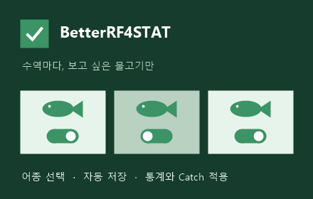

RF4 STAT를 내 취향대로
수역마다,
보고 싶은 물고기만.
관심 없는 어종은 숨기고, 필요한 로그에 집중하세요. 어종 통계와 Catch 목록에 같은 설정이 적용됩니다.
Chrome 웹 스토어 출시 준비 중
사용 방법 알아보기 ↓
수역별로 따로
같은 어종도 수역마다 표시 여부를 정할 수 있습니다. 19개 수역의 누적 도감 목록을 제공합니다.
한 번 정하면 그대로
설정은 현재 크롬 프로필에 자동 저장됩니다. 다시 실행해도 목록을 처음부터 고를 필요가 없습니다.
원본 로그까지 연결
표의 해당 행만 숨깁니다. 남은 행의 Catches 링크와 게시글 사진·살림망 기능을 그대로 이용하세요.
세 단계로 설정하세요
- 확장 프로그램 아이콘 열기
설정 화면에서 원하는 수역 탭을 선택합니다. 처음에는 모든 어종이 활성화되어 있습니다.
- 관심 없는 어종 비활성화
예를 들어 엘크 호수의 화이트 크래피를 끄면, 엘크 호수 통계와 Catch 목록에서 해당 행이 숨겨집니다.
- RF4 STAT에서 확인
설치 전에 열어 둔 페이지는 새로고침하세요. 원본 목록을 잠깐 확인할 때는 ‘잠시 모두 보기’를 누르면 됩니다.
내 설정은 내 브라우저에
숨김 목록을 개발자 서버로 보내지 않습니다. 다른 PC로 옮기려면 설정 내보내기·가져오기를 이용하세요. 물고기 아이콘을 켜면 외부 이미지 서버에 이미지 요청이 발생합니다.
개인정보 안내 읽기 →문의하기
게시자 BongE · wjdtlgus1219@gmail.com
오류가 있다면 확장 프로그램 버전, 수역·어종과 문제가 생긴 페이지 주소를 알려 주세요. 비밀번호나 로그인 정보는 보내지 마세요.